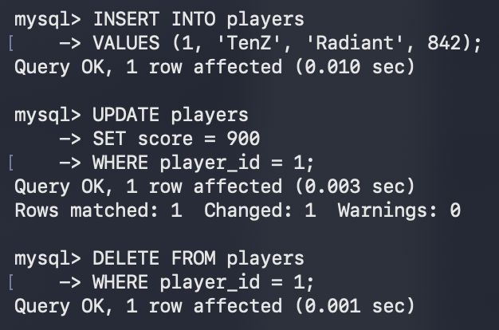
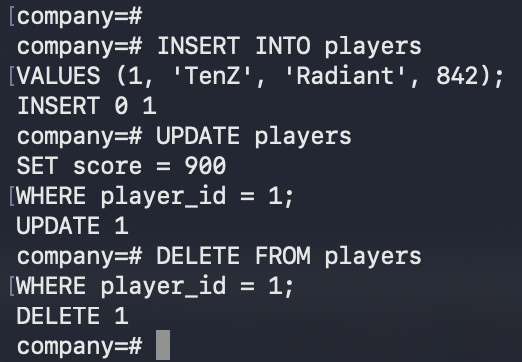

Difficulty: Easy
DML commands manipulate data inside tables.
INSERT adds new rows into a table. The DBMS controls all writes so it can enforce constraints, maintain indexes, and log changes. You can't write directly to the storage file/database.
MySQL / PostgreSQL
INSERT INTO players
VALUES (1, 'TenZ', 'Radiant', 842);
After insertion:
| player_id | username | level | score |
|---|---|---|---|
| 1 | TenZ | Radiant | 842 |
The form above lists every column's value in table order. It works, but it's fragile: add or reorder a column later and the statement breaks silently. There are several other ways to insert, each solving a different problem.
1. Named columns — list the target columns explicitly. Order no longer matters, and any
omitted column takes its DEFAULT (or NULL). This is the form you should prefer.
MySQL / PostgreSQL
INSERT INTO players (username, level, score)
VALUES ('TenZ', 'Radiant', 842);
2. Multiple rows in one statement — one trip to the database instead of many, far faster for bulk loads.
MySQL / PostgreSQL
INSERT INTO players (username, level, score)
VALUES
('TenZ', 'Radiant', 842),
('aspas', 'Immortal', 611),
('yay', 'Immortal', 402);
3. INSERT … SELECT — fill a table from the result of a query instead of literal values. Handy for copying or archiving rows.
MySQL / PostgreSQL
INSERT INTO top_players (username, score)
SELECT username, score
FROM players
WHERE score > 800;
4. Returning the inserted rows — get the new rows (including auto-generated ids) back in the same round trip. The two dialects differ here.
PostgreSQL
INSERT INTO players (username, level, score)
VALUES ('TenZ', 'Radiant', 842)
RETURNING player_id;
MySQL
-- no RETURNING; fetch the generated id separately
INSERT INTO players (username, level, score)
VALUES ('TenZ', 'Radiant', 842);
SELECT LAST_INSERT_ID();
5. Upsert (insert, or update if the key already exists) — avoids a duplicate-key error. Same idea, different syntax in each database.
PostgreSQL
INSERT INTO players (player_id, username, score)
VALUES (1, 'TenZ', 842)
ON CONFLICT (player_id)
DO UPDATE SET score = EXCLUDED.score;
MySQL
INSERT INTO players (player_id, username, score)
VALUES (1, 'TenZ', 842)
ON DUPLICATE KEY UPDATE score = VALUES(score);
To skip conflicting rows instead of updating them, PostgreSQL uses
ON CONFLICT DO NOTHING and MySQL uses INSERT IGNORE.
Note: By default, no, data stored in PostgreSQL is not encrypted. However, if you're using one of the cloud platforms, AWS/Azure/GCP, they all encrypt the data at rest and in motion.
UPDATE modifies existing rows. You could always remove the existing row and add the updated row as a separate (That's what Postgre's internal systems do). However, UPDATE is atomic and less verbose.
MySQL / PostgreSQL
UPDATE players
SET score = 900
WHERE player_id = 1;
Prompt
Update the score of player_id 1 to 900 in the players table.
After update:
| player_id | username | level | score |
|---|---|---|---|
| 1 | TenZ | Radiant | 900 |
Note:
Running UPDATE without WHERE updates all rows from the table.
DELETE removes one or more rows.
MySQL / PostgreSQL
DELETE FROM players
WHERE player_id = 1;
Prompt
Delete the player with player_id 1 from the players table.
After deletion:
| player_id | username | level | score |
|---|
|
 |
 |
Note:
Running DELETE without WHERE clause removes all rows from the table,
similar to TRUNCATE, to be discussed later.
DELETE FROM players;
| player_id | username | level | score |
|---|
Next, DQL >>
Prev, basic DDL commands <<